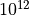
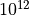
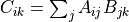

TensorFlow 性能优化¶
本节主要介绍 TensorFlow 模型开发和训练中的一些原则和经验，使得读者能够编写出更加高效的 TensorFlow 程序。
关于计算性能的若干重要事实¶
在算法课程中，我们往往使用时间复杂度（大O符号）表示一个算法的性能。这种表示方法对于算法理论性能分析非常有效，但也可能给我们带来一种误解，即常数项的时间复杂度变化对实际的数值计算效率影响不大。事实上，在实际的数值计算中，有以下关于计算性能的重要事实。尽管它们带来的都是常数级的时间复杂度变化，但对计算性能的影响却相当显著。
不同的程序设计语言由于设计机制和理念，以及编译器/解释器的实现方式不同，在数值计算的效率上有着巨大的区别。例如，Python 语言为了增强语言的动态性，而牺牲了大量计算效率。而C/C++语言虽然复杂，但具有出色的计算效率。简而言之，对程序员友好的语言往往对计算机不友好，反之亦然。不同程序设计语言带来的性能差距可达 数量级以上。TensorFlow 等各种数值计算库的底层就是使用 C++ 开发的；
对于矩阵运算，由于有内置的并行加速和硬件优化过程，数值计算库的内置方法（底层调用BLAS）往往要远快于直接使用 For 循环，大规模计算下的性能差距可达 数量级以上；
对于矩阵/张量运算，GPU 的并行架构（大量小的计算单元并行运算）使其相较于 CPU 具有明显优势，具体视 CPU 和 GPU 的性能而定。在 CPU 和 GPU 级别相当时，大规模张量计算的性能差距一般可达
 以上。
以上。
以下示例程序使用了 Python 的三重 For 循环、Cython 的三重 For 循环、NumPy 的 dot 函数和 TensorFlow 的 matmul 函数，分别计算了两个 10000×10000 的随机矩阵 A 和 B 的乘积。程序运行平台为一台具备Intel i9-9900K处理器、NVIDIA GeForce RTX 2060 SUPER显卡与64GB内存的个人电脑（后文亦同）。运行所需时间分别标注在了程序的注释中。
import tensorflow as tf
import numpy as np
import time
import pyximport; pyximport.install()
import matrix_cython
A = np.random.uniform(size=(10000, 10000))
B = np.random.uniform(size=(10000, 10000))
start_time = time.time()
C = np.zeros(shape=(10000, 10000))
for i in range(10000):
for j in range(10000):
for k in range(10000):
C[i, j] += A[i, k] * B[k, j]
print('time consumed by Python for loop:', time.time() - start_time) # ~700000s
start_time = time.time()
C = matrix_cython.matmul(A, B) # Cython 代码为上述 Python 代码的 C 语言版本，此处省略
print('time consumed by Cython for loop:', time.time() - start_time) # ~8400s
start_time = time.time()
C = np.dot(A, B)
print('time consumed by np.dot:', time.time() - start_time) # 5.61s
A = tf.constant(A)
B = tf.constant(B)
start_time = time.time()
C = tf.matmul(A, B)
print('time consumed by tf.matmul:', time.time() - start_time) # 0.77s
可见，同样是  时间复杂度的矩阵乘法（具体而言，  次浮点数乘法的计算量），使用 GPU 加速的 TensorFlow 竟然比直接使用原生 Python 循环快了近 100 万倍！这种极大幅度的优化来源于两个方面，一是使用更为高效的底层计算操作，避免了原生 Python 语言解释器的各种冗余检查等所带来的性能损失（例如，Python中每从数组中取一次数都需要检查一次是否下标越界）。二是利用了矩阵相乘运算具有的充分的可并行性。在矩阵相乘
时间复杂度的矩阵乘法（具体而言，  次浮点数乘法的计算量），使用 GPU 加速的 TensorFlow 竟然比直接使用原生 Python 循环快了近 100 万倍！这种极大幅度的优化来源于两个方面，一是使用更为高效的底层计算操作，避免了原生 Python 语言解释器的各种冗余检查等所带来的性能损失（例如，Python中每从数组中取一次数都需要检查一次是否下标越界）。二是利用了矩阵相乘运算具有的充分的可并行性。在矩阵相乘  的计算中，矩阵
的计算中，矩阵  的每一行与矩阵
的每一行与矩阵  的每一列所进行的相乘操作都是可以同时进行的，而没有任何的依赖关系。
的每一列所进行的相乘操作都是可以同时进行的，而没有任何的依赖关系。
模型开发：拥抱张量运算¶
在 TensorFlow 的模型开发中，应当尽量减少 For 循环的使用，而多使用基于矩阵或者张量的运算。这样一方面是利用计算机对矩阵运算的充分优化，另一方面也是减少计算图中的操作个数，避免让 TensorFlow 的计算图变得臃肿。
举一个例子，假设有 1000 个尺寸为 100×1000 的矩阵，构成一个形状为 [1000, 100, 1000] 的三维张量 A ，而现在希望将这个三维张量里的每一个矩阵与一个尺寸为 1000×1000 的矩阵 B 相乘，再将得到的1000个矩阵在第0维堆叠起来，得到形状为 [1000, 100, 1000] 的张量 C 。为了实现以上内容，我们可以自然地写出以下代码：
C = []
for i in range(1000):
C.append(tf.matmul(A[i], B))
C = tf.stack(C, axis=0)
这段代码耗时约0.40s，进行了1000次 tf.matmul 操作。然而，我们注意到，以上的操作其实是一个批次操作。与机器学习中批次（Batch）的概念类似，批次中的所有元素形状相同，且都执行了相同的运算。那么，是否有一个单一的操作能够帮助我们一次性计算这1000个矩阵构成的张量 A 与矩阵 B 的乘积呢？答案是肯定的。TensorFlow 中的函数 tf.einsum 即可以帮我们实现这一运算。考虑到矩阵乘法的计算过程是  ，我们可以将这一计算过程的描述抽象为 ij,jk->ik 。于是，对于这一三维张量乘以二维矩阵的“批次乘法”，其计算过程为  ，我们可以将其抽象为
，我们可以将其抽象为 ijk,kl->ijl 。于是，调用 tf.einsum ，我们有以下写法：
C = tf.einsum('ijk,kl->ijl', A, B)
这段代码与之前基于 For 循环的代码计算结果相同，耗时约0.28s，且在计算图中只需建立一个计算节点。
模型训练：数据预处理和预载入¶
相对于模型的训练而言，有时候数据的预处理和载入反而是一件更为耗时的工作。为了优化模型的训练流程，有必要对训练的全流程做一个时间上的评测（Profiling），以弄清每一步所耗费的时间，并发现性能上的瓶颈。这一步可以使用 TensorBoard 的评测工具（参考前文的 查看Graph和Profile信息 ），也可以简单地使用Python的 time 库在终端输出每一步所需时间。评测完成后，如果发现瓶颈在数据端（例如每一步训练只花费1秒，而处理数据就花了5秒），我们即需要思考数据端的优化方式。一般而言，可以通过事先预处理好需要传入模型训练的数据来提高性能，也可以在模型训练的时候并行进行数据的读取和处理。可以参考前文的 使用 tf.data 的并行化策略提高训练流程效率 以了解详情。
模型类型与加速潜力的关系¶
模型本身的类型也会对模型加速的潜力有影响，一个非常不严谨的大致印象是：加速潜力上卷积神经网络（CNN）>循环神经网络（RNN）>强化学习（RL）。CNN由于每一层的卷积核（神经元）都可以并行计算，相对比较容易利用 GPU 的并行计算能力来加速，可以达到非常明显的加速效果。RNN因为存在时间依赖的序列结构，很多运算必须顺序进行，因此 GPU 并行计算带来的性能提升相对较少。RL不仅存在时间依赖的序列结构，还要频繁和环境交互（环境往往是基于 CPU 的模拟器），GPU带来的提升就更为有限。由于CPU和GPU之间的切换本身需要耗费资源，有些时候使用 GPU 进行强化学习反而在性能上明显不如 CPU，尤其是一些模型本身较小而交互又特别频繁的场景（比如多智能体强化学习）。
使用针对特定 CPU 指令集优化的 TensorFlow¶
现代 CPU 往往支持特定的扩展指令集（例如 SSE 和 AVX）来提升 CPU 性能。默认情况下，TensorFlow 为了支持更多 CPU 而在编译时并未加入这些扩展指令集的支持。这也是你经常在 TensorFlow 运行时看到类似以下提示的原因:
I tensorflow/core/platform/cpu_feature_guard.cc:142] Your CPU supports instructions that this TensorFlow binary was not compiled to use: AVX2
以上提示告诉你，你的 CPU 支持 AVX2 指令集，但当前安装的 TensorFlow 版本并未针对这一指令集进行优化。
不过，如果你的机器学习任务恰好在 CPU 上训练更加有效，或者因为某些原因而必须在 CPU 上训练，那么你可以通过开启这些扩展指令集，来榨干最后一点 TensorFlow 本体的性能提升空间。一般而言，开启这些扩展指令集支持必须重新编译 TensorFlow （这一过程漫长而痛苦，并不推荐一般人尝试），不过好在有一些第三方编译的，开启了扩展指令集的 TensorFlow 版本（例如 GitHub 上的 fo40225/tensorflow-windows-wheel ）。你可以根据自己的 CPU 支持的扩展指令集，下载并安装第三方提供的预编译的 .whl 文件来使用开启了扩展指令集支持的 TensorFlow。此处性能的提升也视应用而定，笔者使用一颗支持 AVX2 指令集的 AMD Ryzen 5 3500U 处理器，使用 tf.function ：图执行模式 * 中的 MNIST 分类任务进行测试。针对 AVX2 优化后的 TensorFlow 速度提升约为5~10%。
性能优化策略¶
从以上介绍可以看出，模型运行效率低，不一定是硬件性能不够好的缘故。在购买高性能硬件的时候，有必要多思考一下现有硬件的性能是否通过优化而得到了充分应用。如果不能确定，可以借或租一台高性能硬件（如云服务）并在上面运行模型，观察性能提升的程度。相对而言，借或租的成本远低于升级或购买新硬件，对于个人开发者而言是更为具有性价比的选择。
同时，性能优化也存在一个度的问题。一方面，我们有必要在机器学习模型开发的初期就考虑良好的设计和架构，使得模型在高可复用性的基础上达到较优的运行性能。另一方面，代码的可读性在机器学习中尤为重要。正如软件工程中的名言，“premature optimization is the root of all evil” [Knuth1974] 。直白来说，不要浪费时间做一些收益不大、而且还会严重牺牲代码可读性的性能优化。
- Knuth1974
Knuth D E. Structured programming with go to statements[J]. ACM Computing Surveys (CSUR), 1974, 6(4): 261-301.